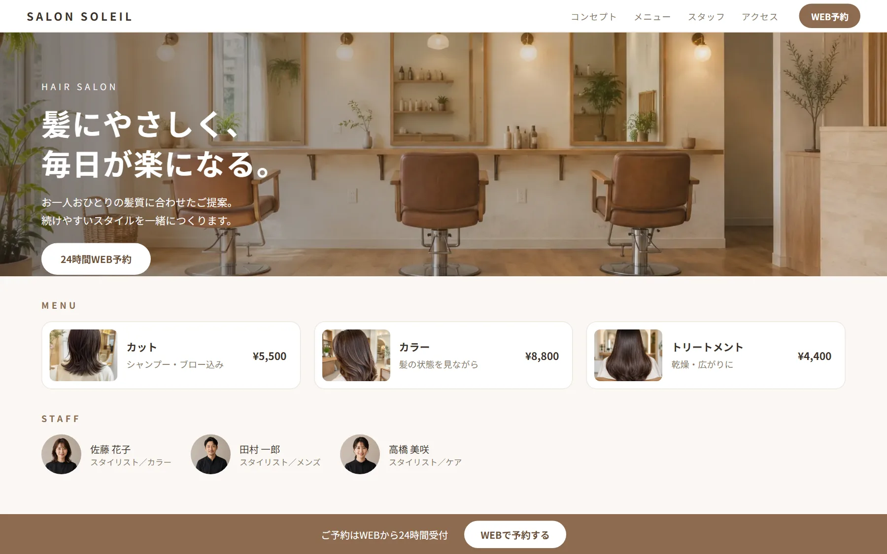
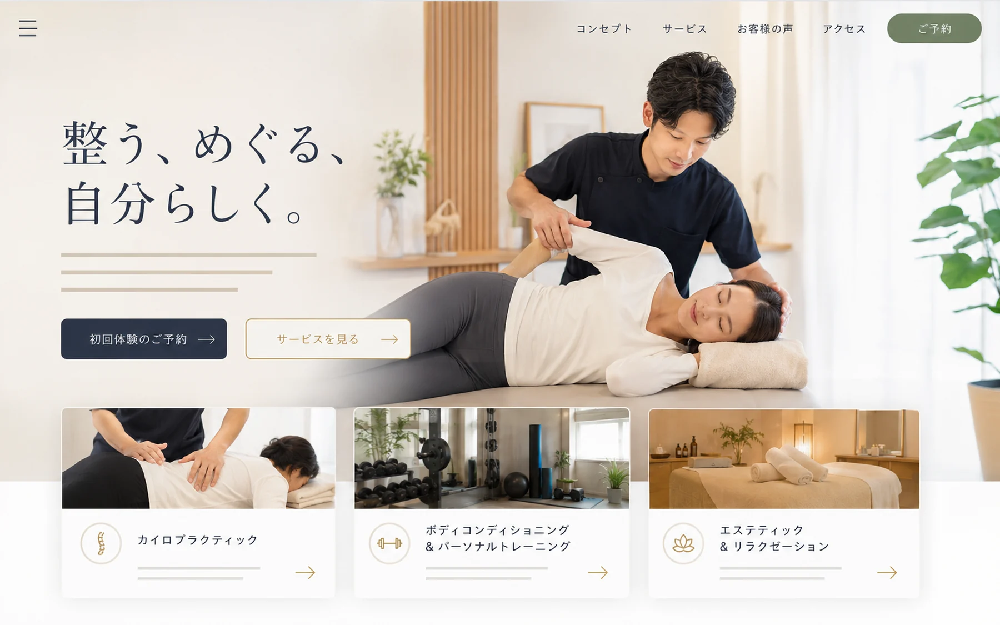
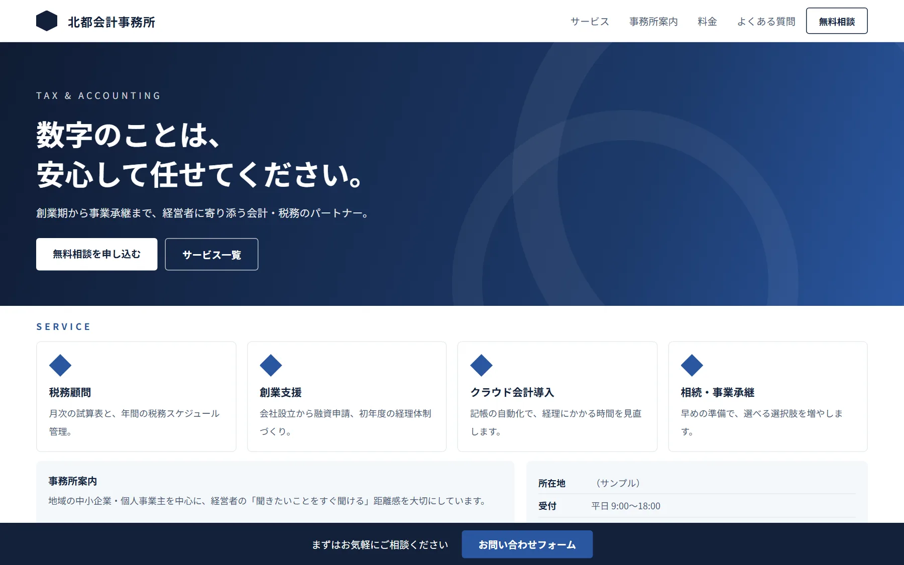

美容室・サロンのための顧客支援
予約・顧客カルテ・再来店を、
ひとつに。
接客メモから、次に来ていただく理由をつくる。
Smart Labo Salonは、予約・来店・顧客管理・LINE再来店支援を
ひとつにつなぐ店舗運営サービスです。
実際の画面をご覧いただきながらご説明します。
実際の画面

※掲載画面はデモ用の架空データです。
実際の画面
実際の画面で、3分で分かります。
接客メモ、AIの整理、次回の接客準備まで。利用の流れは実際の画面のままご覧いただけます。
-

1. 接客後、30秒のメモスマートフォンから短く残す
-

2. AIが整理、人が確認残す内容はスタッフが決める
-
3. 次回来店前の接客準備前回のポイントがそろっている
※掲載画面はデモ用の架空データです。
Smart Labo Salon の3つの価値
-
短く残す
接客のあと、覚えていることをスマートフォンから短く残します。文章にしなくて大丈夫です。
-
AIが整理、スタッフが確認
AIが項目ごとに整理します。残す内容はスタッフが確認して選びます。
-
次回来店の接客準備
次のご来店前に、前回のポイント・会話・提案候補を一画面で確認できます。
Smart Labo Salon
AIが、お客様を覚え、
次の来店につなげる。
顧客情報を保存するだけで終わらせず、次回接客、再来店、販促へ活かす仕組みです。 店舗ページとWEB予約という入口から、来店後の記録、次回の接客準備までがひとつにつながります。 AIは提案までを行い、記録として残すかどうかは店舗のスタッフが決めます。
- 店舗ページ
- WEB予約
- 来店
- 接客メモ
- AI整理
- スタッフ確認
- 接客準備
- 再来店
↺ 再来店したお客様の記録が、また次の接客準備へ。担当が変わっても、お店としてお客様を覚えている状態をつくります。
導入前と、導入後。
効果を数値で約束するものではありません。日々の進め方がどう変わるかをご覧ください。
- 接客内容を、あとで思い出せない
- 記録の方法が、スタッフによって違う
- 来店前に、長いカルテを読み返す
- 次の提案が、担当者の記憶頼り
- 接客後、その場で短く記録する
- AIが内容を整理する
- スタッフが確認して保存する
- 来店前に、接客のポイントを確認する
- 前回の会話や、次回の提案に活かす
30秒メモ
接客後、その場で短く残す。
長い文章を書く必要はありません。覚えておきたいことを、スマートフォンから短く残すだけ。 PCへ戻るまで待たないので、記録が後回しになりません。
- 文章にしなくてよい、短い言葉のままで記録できる
- 本日の施術（メニュー・担当・時間）はあらかじめ表示される
- 保存したメモを、そのままAIの整理へ渡せる
※掲載画面はデモ用の架空データです。
AI整理 → スタッフ確認
AIが整理する。
残す内容は、人が決める。
保存した短いメモを、AIが「好み」「次回提案」「会話」などの項目に整理します。 以前の記録と重なるものは「以前／今回」を並べて表示。登録するかどうかは、スタッフが確認して選びます。
3行のメモが3つの項目に。2つ目は以前の記録との関係も表示されています。

チェックを外した項目は、顧客カルテに登録されません。登録するのは、スタッフが確認した内容だけです。
- 整理AIが接客メモを項目ごとに整理
- 比較以前の記録との関係も提示
- 確認スタッフが内容を確認して選ぶ
- 登録外したものは登録されない
※掲載画面はデモ用の架空データです。
次回来店の接客準備
次の来店前に、
思い出すところから始めない。
接客後に残した内容が、次のご来店の前に「接客準備」として一画面にまとまります。 確認済みの記録だけを使い、押した時だけ作成します。
- 前回のポイント前回の好みや希望。担当が変わっても引き継げます。
- 前回の会話話題にのぼったこと。次の会話の入口になります。
- 今回の提案候補前回「次回は」と残した内容が、提案の候補として出てきます。
※掲載画面はデモ用の架空データです。
店舗ページ ・ 24時間WEB予約受付
予約の入口から、ひとつにつながる。
来店後の記録だけではありません。店舗ページとWEB予約も Smart Labo Salon に含まれ、 お客様が選んだメニュー・担当・日時は、そのまま店舗側の予約に入ります。


- 店舗ページの制作・管理
- 24時間WEB予約受付
- 店舗側の予約へそのまま反映
作って終わりじゃない。
お店で更新できる。
店舗情報・写真・メニュー・スタッフなど日常的な内容は、店舗の管理画面から変更でき、公開中の店舗ページにそのまま反映されます。 大きなデザイン変更や新しいページの追加、特別な制作はSmart Laboへご相談ください。
- 店舗情報紹介文・アクセス・営業時間
- 写真店舗・メニュー・スタッフ
- メニュー名称・説明・所要時間・料金
- スタッフ紹介・担当メニュー
※掲載画面はデモ用の架空データです。
集客から、再来店まで。
店舗ページで出会い、Salonで関係を育てる。ひとつながりの循環として設計しています。
- 店舗ページ
- WEB予約
- 来店
- 接客記録
- AI整理
- 接客準備
- 再来店
再来店したお客様の記録が、次の接客準備へつながります
顧客情報をもとに、投稿やキャンペーンの文章作成も支援します。 配信・送信そのものは店舗の方が行っていただく形です。
料金
ここまでの仕組みを、
ひとつの月額で。
店舗ページ・WEB予約・顧客管理・接客メモ・AI整理・接客準備まで、すべて含まれます。
Smart Labo Salon
月額14,800円（税別）
- 0円初期費用
- 1店舗単位ご契約の単位
- 6か月最低契約期間
店舗ページの制作・管理、24時間WEB予約受付、予約・来店・顧客管理、30秒メモ、AIによる接客メモ整理、 次回来店の接客準備、AI投稿案・AIキャンペーン案、初期設定支援と操作説明（標準1回）を含みます。
実際の画面を見ながらご説明します。ご契約前に、含まれる内容と条件をご確認いただけます。
店舗ホームページ制作
新しいお客様との入口も、つくる。
業種やお店の雰囲気に合わせて、つくります。集客媒体だけに頼らない、店舗の資産になるホームページ。 Salonの店舗ページとは別に、独自ドメインでのホームページ制作も承ります。制作だけのご依頼も可能です。
-

A美容室・サロン写真中心・メニュー・スタッフ・WEB予約
-

B整体・ジム・エステお悩み・サービス・料金・予約
-

C企業・士業会社紹介・サービス・お問い合わせ
掲載している画面は制作イメージです（架空の店舗・事務所）。実際の制作内容はご相談のうえ決めていきます。
50,000円〜（税別）
制作に含まれるもの
- スマートフォン対応・最大5ページ相当
- 店舗・スタッフ・メニューのご紹介
- LINE・Instagram・外部予約サービスへの導線
- 問い合わせ導線・基本SEO設定・修正2回まで
制作内容、ページ数、素材の有無、外部サービス連携によってお見積もりします。ドメイン・サーバー等の実費は別途。
月額5,000円〜（税別）
管理・保守
- 軽微な文章修正・画像差し替え
- 稼働確認・バックアップ
- セキュリティ更新
ページ追加、デザイン変更、継続的な記事作成などは別途お見積もりします。
For Business
会社を動かすAI。
Smart Labo Works
企業のAI活用、顧客管理、業務支援をひとつにつなぐ、法人向けSmart Laboの正式商品です。 詳しい内容と料金は、Works のページでご案内しています。
AI導入・業務自動化のご相談
投稿文章やキャンペーン文章の作成支援、接客メモの整理、個別業務の自動化など、 Smart Labo Salon・Works・ホームページ制作の周辺業務を中心に、今の進め方に合わせてご相談を承ります。
AIを売るのではなく、
仕事が変わる仕組みをつくる。
新しいAIサービスを導入すること自体は、目的にしていません。 店舗や企業の仕事を理解したうえで、ホームページ、顧客管理、AI、業務自動化を 実際の業務へつなげることを大切にしています。
導入の流れ
- 無料相談
- 現状と課題の確認
- ご提案・お見積もり
- 導入・制作
- 運用開始
- 必要に応じて改善
お申し込み前に、現在の状況とご希望をうかがいます。
まずは、あなたの店舗や会社で
何を楽にできるかお聞かせください。
現在の進め方をうかがったうえで、Smart Labo Salon・ホームページ制作・ Smart Labo Works のうち、合うものをご提案します。
実際の画面をご覧いただきながらご説明します。Smart Labo Worksを見る
運営：株式会社スマートラボ会社情報を見る